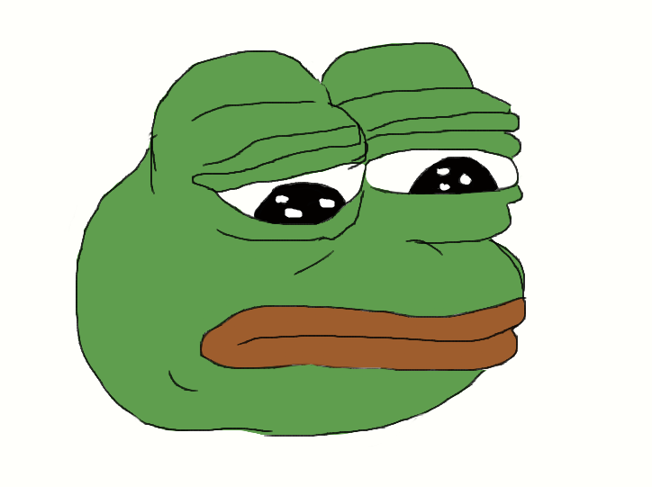
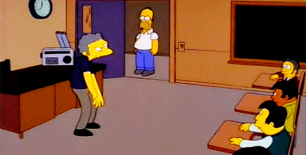

The Dankest of Memes

The Dankness of memes are judged upon the rairity and useage. A more used meme is less dank, unless it becomes so overused or degraded that it can be artistly inserted into other memes and still be dank.
Example:
| |i
|| |_
